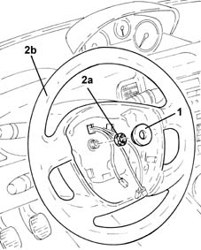

4110A11 steering wheel - r+r for replacement or check for versions with air bag
- Path
- Procedures > 41 STEERING > 4110 STEERING CONTROL AND LINKAGE > 4110A steering control > 4110A11 steering wheel - r+r for replacement or check for versions with air bag
- Kind
- repair procedure (removal / refitting; the operation number is the code)
- Applies to
- all engines; all production periods
- Interactive page
- https://sloeber94.github.io/elrnDB-lYpsln/en/#/2429214
Applies to: all engines; all production periods
 Removing
Removing
 Refitting
RefittingProceed with removal 5580C18 air bag module - r+r .
Position the front wheels perfectly straight and mark the position of the steering wheel in relation to the upper casing.
1. Remove the protective ring.
2. Undo the nut (2a) and remove steering wheel (2b).

Applies to: all engines; all production periods
Refitting
RemovingPosition the steering wheel in its housing check that the marks made previously on the steering wheel and the upper half casing are aligned.
Tighten a new steering wheel fixing nut to the recommended torque.
 | Fastening | Component | Ø | Value (daNm) |
|---|---|---|---|---|
- | Nut | STEERING WHEEL | M16 | 4.5 ÷ 5.5 |
Proceed with refitting 5580C18 air bag module - r+r .
Topics linked from this page (1)
Topics that link to this page (9)
- 4110A46 INTERMEDIATE SHAFT CONNECTED TO STEERING BOX - R.R.
- 4110D20 steering electrical control device - r r
- 4110D35 Electrically controlled steering CONTROL UNIT/MOTOR - R.R.
- 5040C10 air conditioner box - r+r
- 5040C12 air conditioner housing - r r with facia disconnected
- 5520A12 ignition switch assembly - r r for versions with air bag
- 5550A12 complete stalk unit - r+r for versions with air bag
- 5580A10 cruise control lever assembly - r+r
- 5580C12 clock spring for air bag module on steering wheel r r